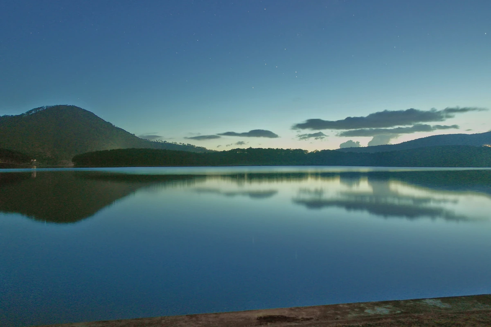
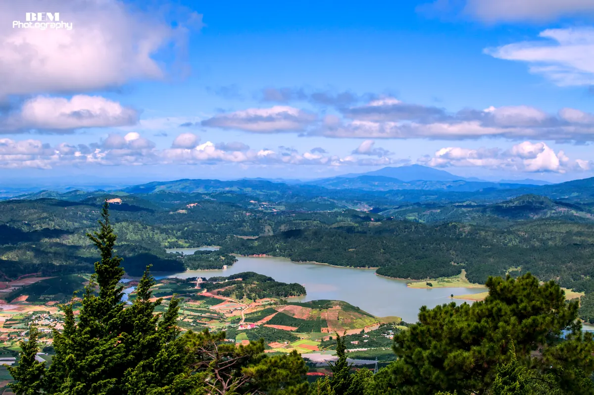
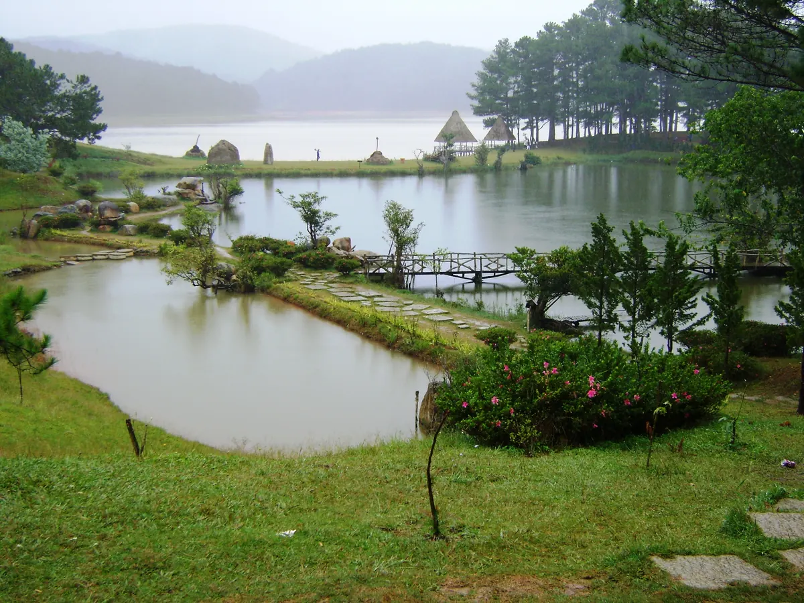
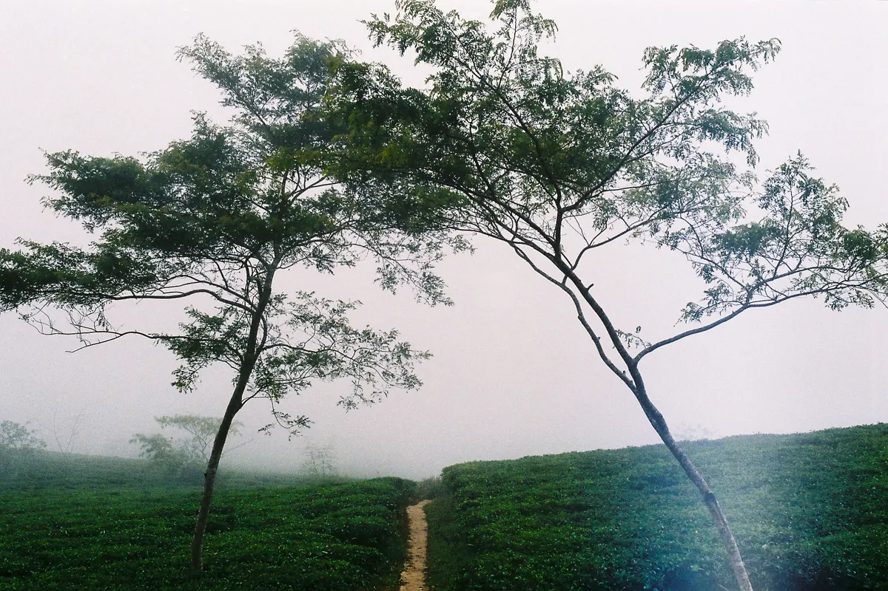

Cắm trại Đà Lạt đẹp nhất vào mùa khô, khoảng tháng 11 đến tháng 4, và năm khu vực dân phượt hay chọn là quanh hồ Tuyền Lâm, chân núi Langbiang, vùng suối Vàng – Thung lũng Vàng, đồi chè Cầu Đất và rừng thông phía Trại Mát. Điểm chung: rừng thông hoặc mặt hồ, đêm lạnh sâu hơn bạn tưởng, và chỗ nào cũng nên liên hệ đơn vị quản lý trước chứ đừng dựng lều tùy tiện. Bài này viết theo góc người sống ở Đà Lạt: đi mùa nào, mang gì, tránh gì.
Cắm trại ở Đà Lạt khác gì cắm trại chỗ khác?
Cắm trại ở Đà Lạt khác trước hết ở cái lạnh. Nằm trên cao nguyên ở độ cao khoảng 1.500 mét, Đà Lạt có kiểu khí hậu ôn hòa quanh năm, ban ngày nắng rất dễ chịu nhưng vừa tắt nắng là nhiệt độ tụt rất nhanh — mùa khô, nhiệt độ thấp nhất ban đêm trong phố trung bình chỉ khoảng 11–13°C (tháng 12 đến tháng 3, theo bảng khí hậu trên trang Wikipedia vừa dẫn), vùng cao và ven hồ còn lạnh hơn. Nhiều bạn đi lần đầu thấy trưa nắng chang chang nên chỉ mang áo khoác mỏng, tới khuya ngồi co ro.
Khác thứ hai là sương: sáng sớm sương xuống dày, đồ để ngoài trời ẩm hết, nên tấm lót chống ẩm quan trọng ngang cái túi ngủ. Mùa mưa rơi vào quãng tháng 5 đến tháng 10, mưa hay đổ vào chiều tối — đúng lúc dựng trại. Các mốc mùa chỉ là ước chừng, trước ngày đi vẫn nên xem dự báo.
Năm khu vực cắm trại quanh Đà Lạt
Nói rõ trước: bên dưới là các khu vực, không phải quảng cáo cho khu trại cụ thể nào. Mỗi vùng có nhiều đơn vị tổ chức, chất lượng chênh nhau khá xa, nên chọn nơi có giấy phép và hỏi kỹ trước khi đặt cọc.
1. Hồ Tuyền Lâm — dễ thở nhất cho người đi lần đầu
Gần trung tâm nhất danh sách, chạy xe một lát là tới, mà cảnh đã ra dáng "đi rừng": mặt hồ rộng, thông bao quanh, sáng sớm hơi nước bốc lên rất đẹp. Hợp nhóm có trẻ nhỏ hoặc người lớn tuổi: lỡ có sự cố, chạy về phố vẫn kịp. Đổi lại, cuối tuần khá đông.

2. Chân núi Langbiang — lạnh nhất, đổi lại được săn mây
Đi về phía núi, xa trung tâm hơn hồ Tuyền Lâm một quãng. Vùng cao nên đêm lạnh rõ rệt hơn trong phố, bù lại sáng sớm có cơ hội thấy biển mây trôi dưới chân — đáng để dậy sớm.

3. Suối Vàng – Thung lũng Vàng — không gian rộng cho nhóm đông
Khu vực này ở phía bắc thành phố, xa hơn hẳn hai điểm trên nên phải tính thêm giờ chạy xe, bù lại có mặt nước lớn và những đồi cỏ thoáng, hợp nhóm chục người trở lên cần chỗ dựng nhiều lều và chơi trò tập thể.

4. Đồi chè Cầu Đất — bình minh trên nương chè
Xa nhất danh sách: đi hướng Trại Mát rồi chạy tiếp một quãng dài nữa, nên tra bản đồ trước khi đi. Đổi lại là bình minh vàng rực trên những luống chè xếp lớp, khác hẳn rừng thông. Đường đèo dốc, sương mù buổi sớm, tay lái yếu thì đừng chạy xe máy lúc trời còn tối.

5. Rừng thông phía Trại Mát – Xuân Trường — gần phố mà vẫn vắng
Phía đông thành phố, dọc tuyến đường sắt cổ Đà Lạt – Trại Mát. Đặc điểm ở đây là thung lũng nhà kính trồng hoa: tối xuống, cả thung lũng lên đèn sáng trắng như một dải sao rơi xuống đất. Khu này không xa phố, tiện cho nhóm muốn ăn tối tử tế rồi mới vào trại.
Mang gì cho một đêm ngủ lều ở Đà Lạt
Thứ quyết định bạn ngủ ngon hay thức trắng là chống lạnh từ mặt đất lên, không phải cái lều. Túi ngủ chịu lạnh cộng tấm lót sàn là hai món phải có, sau đó mới tới quần áo mặc nhiều lớp, tất dày và đèn pin đội đầu.
- Túi ngủ chịu lạnh và tấm lót sàn: hơi lạnh bốc từ đất lên mới làm bạn mất ngủ, không phải gió.
- Mặc nhiều lớp: áo giữ nhiệt, áo len, ngoài cùng là áo khoác chắn gió. Cởi bớt thì dễ, thiếu thì chịu.
- Tất dày, mũ len, găng tay: ba món nhỏ này giữ ấm hơn cả áo phao to kềnh.
- Đèn pin đội đầu và sạc dự phòng: trời lạnh làm pin điện thoại tụt nhanh bất ngờ.
- Áo mưa hoặc bạt che: kể cả mùa khô, sương đêm cũng làm ướt đồ.
- Giày có độ bám: đất đồi thông phủ lá kim rất trơn sau mưa.
- Túi đựng rác và thuốc cơ bản: dầu gió, thuốc đau bụng, băng cá nhân.
Vài luật bất thành văn nên nhớ
Rừng thông cực dễ bắt lửa vì lớp lá kim khô phủ dày dưới đất. Đừng tự đốt lửa ngoài khu vực được phép; trước khi ngủ phải dập bằng nước cho tắt hẳn, không chỉ phủ đất lên. Không xả rác — chỗ bạn rời đi phải sạch hơn lúc bạn tới.
Không tắm hay chèo thuyền tự phát khi không có người quản lý; nước ở đây lạnh và sâu hơn nhìn bằng mắt. Cắm trại gần nhà vườn thì giảm âm lượng loa về khuya, vì người trồng hoa quanh đó dậy rất sớm. Và luôn báo người ở nhà biết bạn cắm trại khu nào, mấy giờ về.
Ăn no rồi hãy vào lều
Nói thật: nấu nướng ở điểm trại nghe lãng mạn, làm mới biết cực. Gió tạt, than khó cháy, rửa dọn trong nước buốt tay. Nhiều nhóm chọn cách gọn hơn: ăn một bữa nướng no nê lúc chiều tối rồi mới vào trại.
Nếu bạn cắm trại phía Trại Mát – Xuân Trường thì Tiệm Nướng Trạm Dừng Chill (111 Huỳnh Tấn Phát, Phường Xuân Trường) khá thuận đường: từ trung tâm chạy hướng Trại Mát rồi đi tiếp là tới. Ngay số 113 kế bên còn Tiệm Nướng & Chill Xóm Lèo (quán cùng chủ với Trạm Dừng Chill), cũng là quán nướng nhìn xuống thung lũng nếu bạn muốn thêm lựa chọn. Quán mở 15:00–23:00, giá 95.000đ–300.000đ/người đã gồm VAT, hơn 70 món cả đồ ăn lẫn đồ uống, gọi lẻ từng món. Ba khung cảnh đáng canh giờ: tàu lửa cổ chạy dưới chân quán từ khoảng 16:30 (giờ tàu tới quán), hoàng hôn xuống thung lũng từ khoảng 16h30, biển sao nhà lồng (đèn trong các nhà kính trồng hoa dưới thung lũng) lên đèn từ 18h30 — đều là giờ tham khảo, tùy hôm xê dịch, muốn xem đủ cả ba thì tới sớm và ngồi lâu. Món có tên riêng của quán là Bò Kobe Nướng Tảng Phô Mai Trứng Muối 209K; trời lạnh thì nồi lẩu gà lá é 300K làm ấm cả nhóm rất nhanh. Xem trước menu rồi đặt bàn qua form trên web, nhất là khi đi nhóm đông; đặt bàn ăn thường không cần cọc, riêng đoàn trên 10 người thì có cọc, nhân viên báo mức khi xác nhận. Quán cách trung tâm Đà Lạt khoảng 7 km, chạy xe chừng 20 phút theo hướng Trại Mát, có bãi đỗ miễn phí cho cả xe máy và ô tô con ngay tại quán.
Lịch trình mẫu cho một đêm cắm trại
Nguyên tắc chính của một đêm cắm trại là dựng lều khi trời còn sáng và ăn tối cho no trước khi về trại. Tới điểm trại khoảng 15h, dựng xong trước 16h, rồi mới tính chuyện ăn uống và ngồi chơi buổi tối.
- 14h–15h: mua đồ khô, nước, sạc đầy pin rồi chạy về phía điểm trại.
- 15h–16h: tới nơi, dựng lều và trải lót sàn khi trời còn sáng.
- 16h15–19h30: ăn tối cho no. Đi hướng Trại Mát thì ghé Trạm Dừng Chill, có mặt trước 16:30 và ngồi qua 18h30 để xem đủ tàu lửa, hoàng hôn và nhà lồng lên đèn.
- 20h–22h: về trại, ngồi quanh khu vực lửa được phép, uống trà nóng, hạ âm lượng.
- 5h–6h sáng: dậy đón sương và mây — phần đẹp nhất của chuyến đi.
- 7h–8h: ăn sáng nhẹ, thu lều, gom rác mang về.
Cắm trại ở Đà Lạt không cần thiết bị đắt tiền hay kỹ năng sinh tồn. Chọn đúng mùa, chuẩn bị đủ ấm, tôn trọng rừng và người dân quanh đó — phần còn lại thành phố này lo hết: thông, sương, và một buổi sáng mở lều ra thấy mây nằm ngay dưới chân mình.
Câu hỏi thường gặp
Cắm trại Đà Lạt nên đi vào tháng mấy?
Mùa khô, khoảng tháng 11 đến tháng 4, là thời điểm dễ chịu nhất vì ít mưa và trời trong nên sáng sớm dễ săn mây. Mùa mưa rơi vào quãng tháng 5 đến tháng 10, mưa hay đổ vào chiều tối, đúng lúc bạn đang dựng lều. Các mốc mùa này chỉ là ước chừng, vẫn nên xem dự báo trước ngày đi. Dịp lễ và cuối tuần các khu vực đẹp rất đông, nên liên hệ đặt chỗ sớm.
Cắm trại ở Đà Lạt có lạnh không, cần mang gì để ngủ ấm?
Ban ngày nắng dễ chịu nhưng vừa tắt nắng là nhiệt độ tụt rất nhanh: mùa khô (tháng 12 đến tháng 3), nhiệt độ thấp nhất ban đêm trong phố trung bình chỉ khoảng 11–13°C theo bảng khí hậu Đà Lạt trên Wikipedia, vùng cao và ven hồ còn lạnh hơn — nên đừng nhìn trời trưa mà đánh giá. Quan trọng nhất là túi ngủ chịu lạnh cộng một tấm lót chống ẩm dưới sàn lều, vì hơi lạnh bốc từ đất lên mới làm bạn mất ngủ. Mặc nhiều lớp mỏng thay vì một áo phao dày, và đừng quên tất dày, mũ len, găng tay.
Có được tự dựng lều cắm trại ở Đà Lạt không?
Không nên tự ý dựng lều. Nhiều khu rừng thông, mặt hồ và đồi quanh Đà Lạt có đơn vị quản lý riêng (ban quản lý rừng, khu du lịch), nên bạn cần liên hệ và xin phép trước, hoặc đi qua đơn vị tổ chức có giấy phép rõ ràng. Riêng chuyện lửa thì tuyệt đối không tự đốt ngoài khu vực được phép, vì lá thông khô bắt lửa cực nhanh.
Khu cắm trại nào gần trung tâm Đà Lạt nhất?
Khu vực quanh hồ Tuyền Lâm là gần trung tâm nhất, chạy xe một lát là tới, hợp cho người đi lần đầu hoặc nhóm có trẻ nhỏ. Vùng rừng thông phía Trại Mát – Xuân Trường ở phía đông thành phố cũng không xa, vắng hơn và có thêm cảnh thung lũng nhà kính lên đèn buổi tối.
Nhóm đông người nên cắm trại ở khu nào?
Khu vực suối Vàng – Thung lũng Vàng ở phía bắc thành phố có mặt nước lớn và đồi cỏ thoáng, đủ chỗ dựng nhiều lều và chơi trò tập thể. Đường xa hơn hẳn hai khu gần trung tâm nên cả nhóm phải thống nhất giờ khởi hành, tới nơi lúc trời còn sáng để dựng lều cho kịp.
Nên tự nấu ăn khi cắm trại hay ăn no trước rồi mới vào trại?
Nếu nhóm ít người và ít kinh nghiệm thì ăn no trước sẽ nhàn hơn nhiều: gió cao nguyên làm than khó cháy, rửa dọn bằng nước lạnh rất cực, mà khuya đói lại không có chỗ mua. Cách phổ biến là ăn tối ở phố lúc chiều, mang theo ít đồ khô và nước nóng để nhâm nhi buổi đêm.
Đi cắm trại hướng Trại Mát thì ăn tối ở đâu trên đường?
Tiệm Nướng Trạm Dừng Chill ở 111 Huỳnh Tấn Phát, Phường Xuân Trường — từ trung tâm chạy hướng Trại Mát rồi đi tiếp là tới, thuận đường nếu bạn cắm trại phía Trại Mát – Xuân Trường hoặc đi tiếp lên Cầu Đất. Quán mở 15:00–23:00, giá 95.000đ–300.000đ mỗi người đã gồm VAT, hơn 70 món gồm cả đồ ăn lẫn đồ uống, gọi lẻ từng món. Muốn xem đủ ba cảnh thì nên có mặt trước 16:30 và ngồi qua 18h30: tàu lửa cổ chạy dưới chân quán từ khoảng 16:30, hoàng hôn thung lũng từ khoảng 16h30, biển sao nhà lồng lên đèn từ 18h30. Quán đạt 4,8/5 sao với 7.060 lượt đánh giá trên Google Maps (số đọc ngày 04/09/2026); đi nhóm đông thì nên đặt bàn trước qua website.